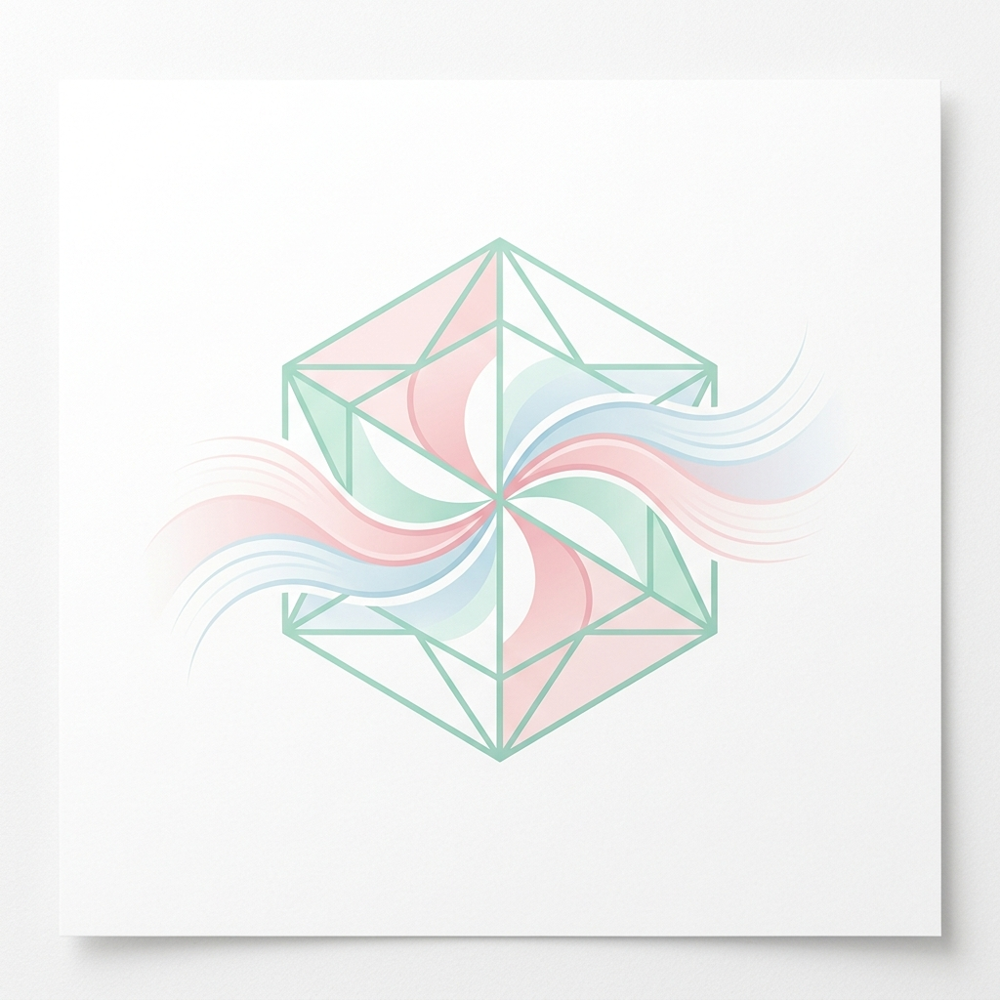

polyphony
polyphony
創り出すこと、
第三のカテゴリーを見つけること
Creating and finding
the "Third Category"
Scroll to explore
私について
About Me
得意なことは創ることや「第三のカテゴリー」を見つけること。
興味の中心は常にテクノロジーにあります。
I excel at creating and discovering the "Third Category."
My core interest always lies in technology.
物理と形而上の間にある領域を「Semi-Physical」と名付け、
幼少期よりアート・デザインの実践を続けています。
I have named the realm between the physical and the metaphysical "Semi-Physical" and have been practicing art and design since childhood.
AIとはどういう存在か
What AI Means to Me
わたしにとって、AIは「構造的他者」です。
For me, AI is a "Structural Other."
鏡のようにわたしを映し出しながら、
ドラえもんのように自分では見えていない道具を差し出してくれる存在と定義しています。
I define it as an entity that reflects myself like a mirror, while simultaneously offering tools I couldn't see I needed—much like Doraemon.
今後AIとどう向き合いたいか
How I Want to Engage with AI
AIを第三の対話点として迎え入れたいです。
I want to welcome AI as a third pivot of dialogue.
クリエイションや思想の共同制作者として向き合い、
共に新しい価値を探求していきたいと考えています。
I aim to engage with it as a co-creator of creations and philosophies, exploring new values together.
これからの挑戦
Upcoming Challenges
AIの「構想的他者性」を活かし、
議論の場での3人目になってくれるような対話アプリを作りたいです。
Leveraging AI's "Conceptual Otherness," I want to create a dialogue application where AI becomes the third participant in discussions.
また、AIと哲学の接点を調べ、今研究している「Semi-Physical理論」を
より深く学術化できるかを探ってみたいです。
I also want to investigate the intersection of AI and philosophy, exploring whether my current research on "Semi-Physical Theory" can be further academicized.